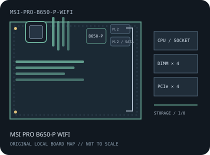

[ INDIVIDUAL COMPONENT // MOTHERBOARDS ]
MSI PRO B650-P WIFI
AMD Socket AM5 / AMD B650, ATX, 305 × 244 mm, 2022. This record identifies the exact model and revision scope below.

REVISION WARNING: Verify the full model name and PCB revision silkscreen before fitting a CPU, selecting memory, or applying firmware. Similar names and revisions may use different support files.
Specifications
| Catalog subcategory | AMD Socket platforms |
|---|---|
| Board / revision covered | MS-7D78 PRO B650-P WIFI; the WiFi model is distinct from PRO B650-P and other PRO-series boards. |
| Socket and chipset | AMD Socket AM5 / AMD B650 |
| Form factor | ATX, 305 × 244 mm |
| Memory | Four dual-channel DDR5 DIMM sockets; capacity up to 256 GB in MSI's current product specification. EXPO rate and stable population depend on CPU, BIOS and QVL. |
| CPU and BIOS support | Ryzen 7000, 8000 and 9000 Series desktop processors listed for MS-7D78; minimum BIOS varies by exact CPU. Consult MSI's model-specific processor table. |
| Expansion | CPU-connected PCIe 4.0 x16-length slot, chipset PCIe 3.0 x16-length slot operating up to x4, and two PCIe 3.0 x1 slots. |
| Storage | Two M.2 sockets with PCIe 4.0 x4 NVMe paths and six SATA 6 Gb/s ports; lane and device availability may vary with processor, so check the manual. |
| Rear I/O and connectivity | Rear USB-C and USB-A across USB 3.2 generations plus USB 2.0, HDMI/DisplayPort for supported integrated graphics, 2.5GbE, Wi-Fi 6E/Bluetooth and multi-channel audio. |
Compatibility and revision notes
AM5 requires DDR5 and does not accept AM4 CPUs or DDR4. Confirm BIOS support for the exact Ryzen CPU and check reduced I/O/M.2 availability with selected 8000-series processors.
Socket, connector shape and chipset branding alone do not establish compatibility. Check the exact board revision, CPU support table, minimum BIOS, memory population rules, power connectors, case clearance and lane-sharing details in the cited documents.
Preservation and repair
Protect AM5 socket contacts and inspect Wi-Fi antenna sockets, M.2 retention and ATX power connections. Use only MS-7D78 firmware and its documented flash procedure.
For archival preservation, record PCB revision, serial/date codes, installed firmware, known faults, repairs and test conditions. Use ESD-safe handling and do not power a board with loose conductive hardware beneath it.
Manufacturer sources
- MSI PRO B650-P WIFI specificationsOfficial specifications for the WiFi model, memory, expansion and storage.
- MSI PRO B650-P WIFI manuals and downloadsManufacturer manual for MS-7D78 layout, BIOS and installation.
- MSI PRO B650-P WIFI support and CPU/BIOS listUse the current CPU compatibility and BIOS tables.
Manufacturer specifications, manuals and support lists are authoritative for the physical board; use only revision-matched firmware.